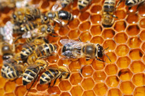
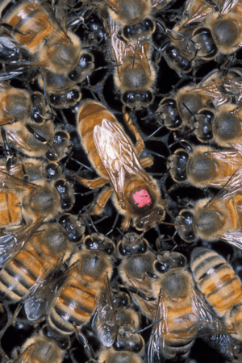
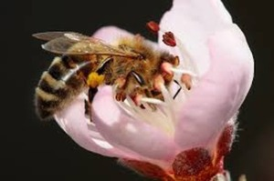

Bees are winged insects in the superfamily Apoidea with 20,000+ species. There are many roles that
certain bees are assigned to, such as queen bee and worker bees. They collect nectar from flowers and
unintentionally help pollinate flowers, making them a crucial part to maintaining the flora and fauna in
a sustainable ecosystem.

Bees in a hive, by Ivan Marjanovic
What are some species of bees and their roles in the hive?
Some species are: Carpenter bees, Honey bees and Leafcutter bees.
Some roles are queen bee and drone bees, which focuses on mating with each other for reproduction. Worker
bees, which can be further segregated into
more specific roles are primarily focused on maintaining the hive and production of honey.

A Queen honey bee, by Scott Bauer, USDA Agricultural Research Service
How do bees help in sustaining the ecosystem?
Bees have the roles of a pollinator in the ecosystem. They help to pollinate the flowers while foraging for
nectar which will become honey.
This helps the flowers to reproduce which is a core part of an ecosystem, ensuring sustainability in the
ecosystem.

A bee pollinating a flower, by fir0002
Did you know?
1. The honey that is produced by bees have about 17%-20% of water content, making it very difficult to
spoil due to
the lack of water for mold and other micro-organisms to live in it. However, its viscosity, is one of
the highest among
all organic liquids like oil, water, alcohol etc.
2. Bees do a "Waggle Dance" that can communicate with other bees in the hive to tell others where food
can be found. The vibrations and sounds
produced by the quick flapping of their wings also help to communicate between each other.
3. The hexagon tiles of a honeycomb in a beehive has Mathematics, Physics and Biology all in play.
The layout of the hives uses Mathematics and Physics, while the heat dispersion in the hive uses
Biology.
Mini Game
Your Feedback
Hi, I hoped you liked this webpage about bees and also increased your knowledge about them. Please
fill in
your input about
how I can improve the site at the survey below.
Your Name:
How much did you enjoy the webpage? (1-5)
1
2
3
4
5